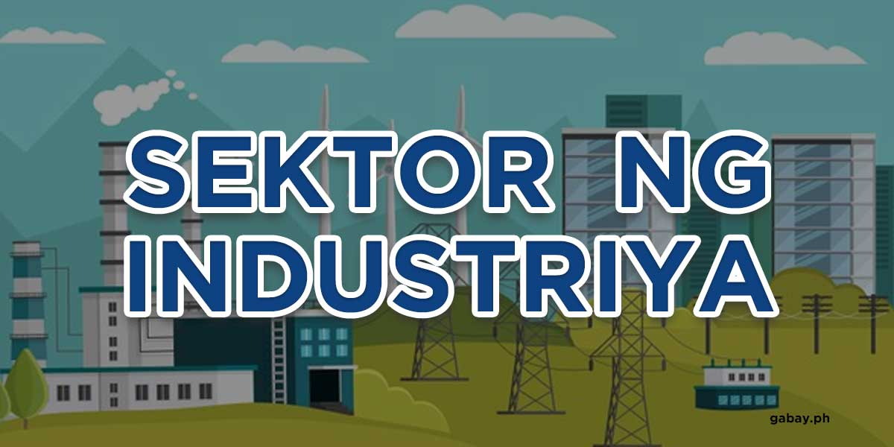
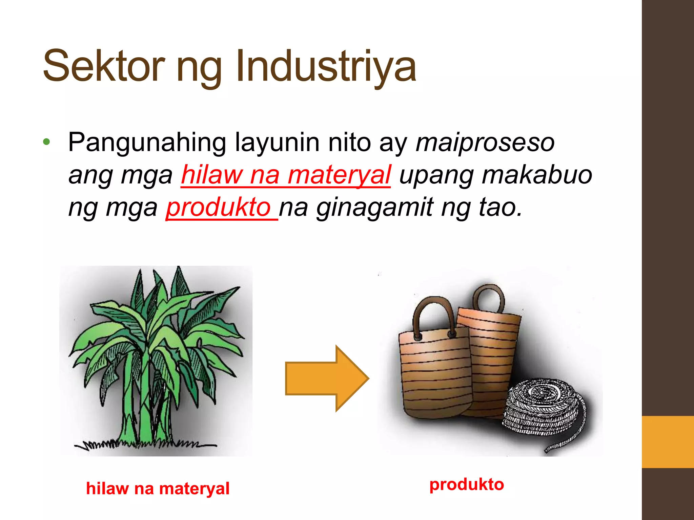
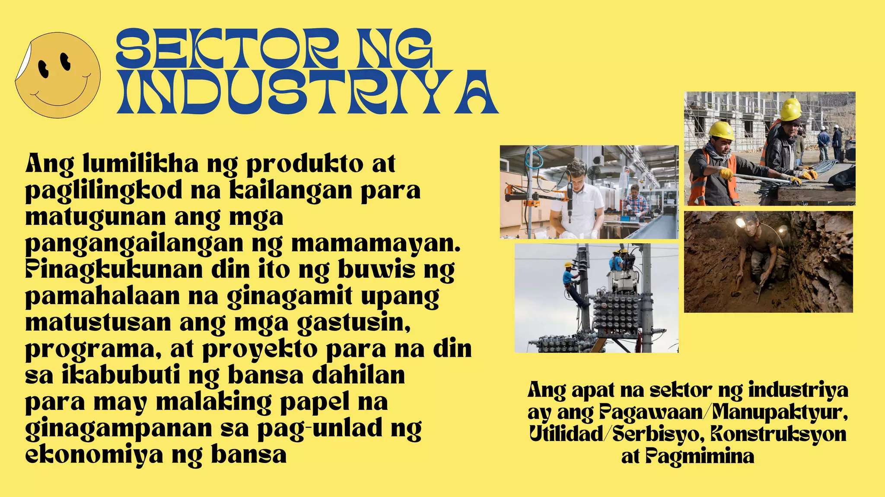

Tumutukoy sa pagproseso ng mga hilaw na materyal at paggawa ng mga produkto na kinakailangan para sa pampublikong pamilihan.
Naglalayong maiproseso ang mga hilaw na materyal upang makabuo ng produkto na ginagamit ng tao.
Pagkuha at pagproseso ng mga yamang mineral (metal, di-metal, o enerhiya) upang gawing tapos na produkto o kabahagi ng isang yaring kalakal.
Ang mismong produkto, hilaw man o naproseso ay nagbibigay ng kita para sa bansa.
Paggawa ng mga produkto sa pamamagitan ng manual labor o ng mga makina.
Nagkakaroon ng pisikal o kemikal na transpormasyon ang mga materyal upang makabuo ng mga bagong produkto.
Pagtatayo ng mga gusali, estruktura, at iba pang land improvements.
Pagtugon sa pangunahing pangangailangan ng mga mamamayan tulad ng tubig, kuryente, at gas.
Kabilang dito ang paglalatag ng mga imprastraktura at teknolohiya upang maihatid ang mga serbisyong ito.
Nagsimula sa programang "Filipino Muna" ni Pangulong Carlos P. Garcia na naglalayong bigyan ng mas malaking partisipasyon ang mga Pilipino sa pagpapatakbo ng ekonomiya.
Nagbukas ng kompetisyon sa industriya ng langis at ang pamilihan ang nagtatakda ng presyo ng petrolyo.
Serbisyong pinansiyal kung saan ang mga bangko ay nagpapautang na may mababang interes sa mahihirap na pamilya.
Nagbigay ng priyoridad sa mga Pilipino sa kalakalang pagtitingi.
Nagbukas ng kalakalang pagtitingi sa mga dayuhan.
Pinapayagan ang pribadong sektor na magtayo at magpatakbo ng pasilidad sa loob ng humigit-kumulang 25 taon.
Itinatag upang pangasiwaan ang pagbebenta ng mga korporasyong pagmamay-ari ng pamahalaan sa pribadong sektor.
Industriyalisasyon: paggamit ng makinarya at makabagong kagamitan sa pagpapaunlad ng industriya.
Sekundaryang sektor: sektor ng ekonomiya na kumakatawan sa industriya.